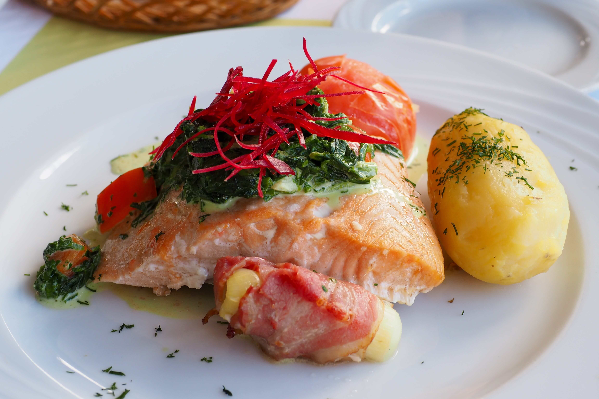

Het eten in Groenland

Het eten bestaat vooral uit vlees en vis soms zelfs rauw,
dit komt omdat planten er moeilijk te verbouwen zijn.
Ook al kan er tegenwoordig eten worden geimporteerd de traditionele
Maaltijden hangen nog wel rond. Zoals suaasat wat een sterke soep met
zeehond rijst en uien.